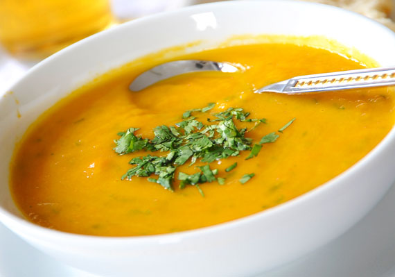
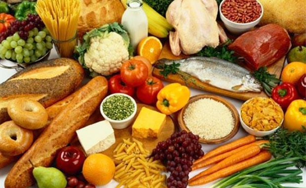
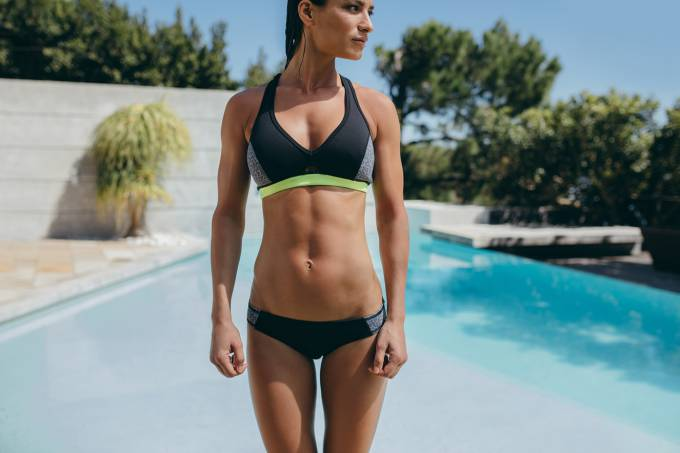

Primeiro passo é escolher uma dieta que te interessa!
A Dieta Detox é composta de frutas, verduras, legumes, sucos e chás para purificar as células e acelerar o metabolismo e consequentemente o emagrecimento. Ela também possui baixas calorias, com poucos carboidratos e muito líquido.
Esta dieta costuma ser utilizada pelos famosos e por muitas mulheres, principalmente perto do verão e do carnaval por ter um efeito rápido para quem tem pressa em perder aqueles quilinhos a mais incomodando.
Esta dieta para emagrecer em 15 dias permite uma rápida perda de peso, podendo-se reduzir cerca de 5 Kg em apenas duas semanas e sem muito sacrifício.
Você mantém a malhação em dia, mas ainda não conquistou os músculos que queria? Aposte nessa dieta turbinada, que ajuda você a ganhar massa magra e definição.
A dieta para aumentar a massa muscular se baseia em aumentar a quantidade de proteínas que se encontram em alimentos como peixe ou carne.
O ganho de massa muscular se apoia em dois pilares, o primeiro sendo a atividade fisica e o outro a alimentação.